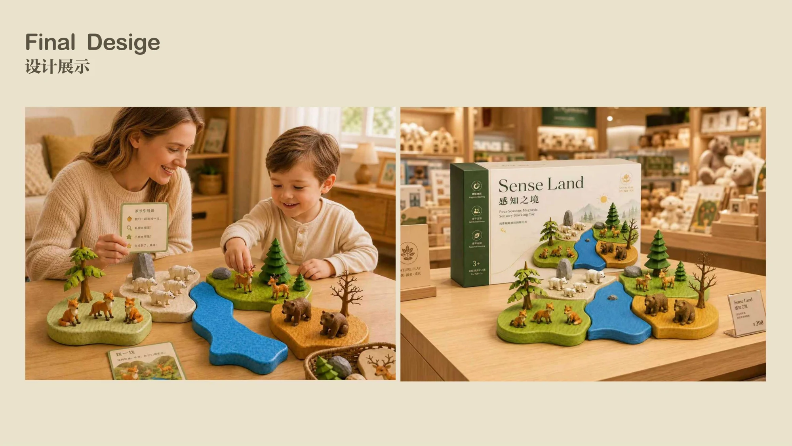
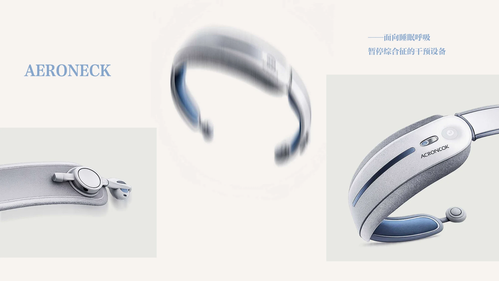
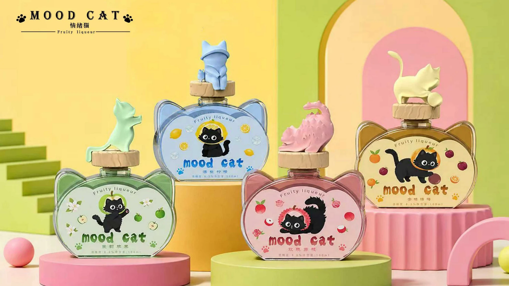
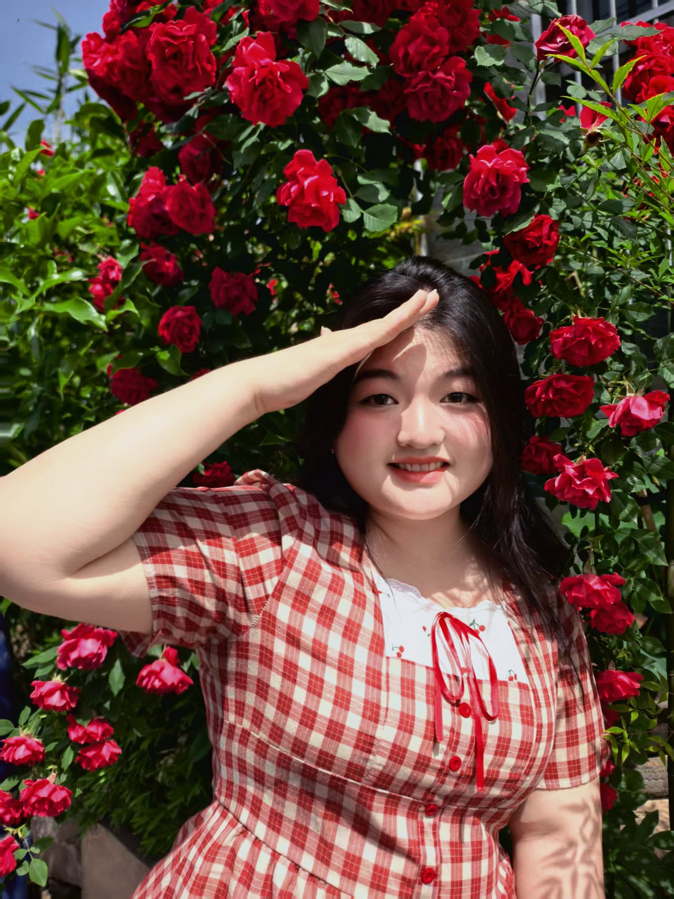
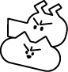
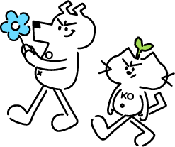
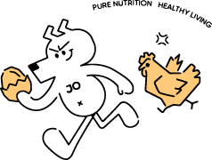

PRODUCT · INTERACTION · VISUAL个人设计作品集 / PORTFOLIO
DESIGN NOTES
VOL. 01 / YUXI
VOL. 01 / YUXI
YUXI ZHUPersonalWebsite
MEET MY CREATIVE SIDE.Hi, I'm Yuxi!JO + KO · 点点我们，打个招呼STAY
CURIOUS ✳
CURIOUS ✳
A FEW THINGS
I’VE CREATED从一个想法，到一件作品
I’VE CREATED从一个想法，到一件作品

01 SENSE LAND ↗
02 AERONECK ↗
03 MOOD CAT ↗01 / ABOUT ME
保持好奇，让设计有温度。



朱煜茜 YUXI ZHU
西安工业大学 · 产品设计
关注产品、交互与视觉设计。从理解人的需求开始，以同理心与创新意识，探索更细腻的日常体验。
产品综合开发设计信息与交互设计服务设计智能产品创意设计
SELECTED RECOGNITION
CADA 日本概念艺术设计 · 第七届、第八届银奖
好创意暨全国数字艺术设计大赛 · 陕西赛区二等奖
第六届 G-CRSOSS 跨界艺术创意 · 银奖
关于我 / A LITTLE MORE ABOUT ME
联系我 3074745326@qq.com ↗我拥有较强的创新意识、责任心与同理心，善于沟通与团队合作，注重细节，也乐于尝试新事物、学习新技能。本科期间，我积累了任职、参赛与组织活动的经验，希望将这些经历融入设计，让每一个想法都更贴近人的真实需求。
MY TOOLKIT
专业技能
建模与渲染
MODELING & RENDERING
- Rhino 8
- KeyShot
- Blender
平面与视觉设计
GRAPHIC & VISUAL DESIGN
- Photoshop
- Illustrator
- Figma
- Procreate
AI 创作工具
AI TOOLS
- ChatGPT
- Gemini
- Nano Banana
- Midjourney
- Grok
- Claude
- 豆包
- DeepSeek
02 / SELECTED WORK
想法，落地有声。

从真实需求出发，
探索物品与人之间的关系。
MORE CURIOSITY, MORE POSSIBILITIES.

03 / MY IP UNIVERSEA LITTLE
A LITTLE
JOKO.✳
一点顽皮，一点好奇。
猫咪 KO 和小狗 JO，
一起把日常变得有趣。
今天，也要有点好奇心。
点点我们，一起动起来